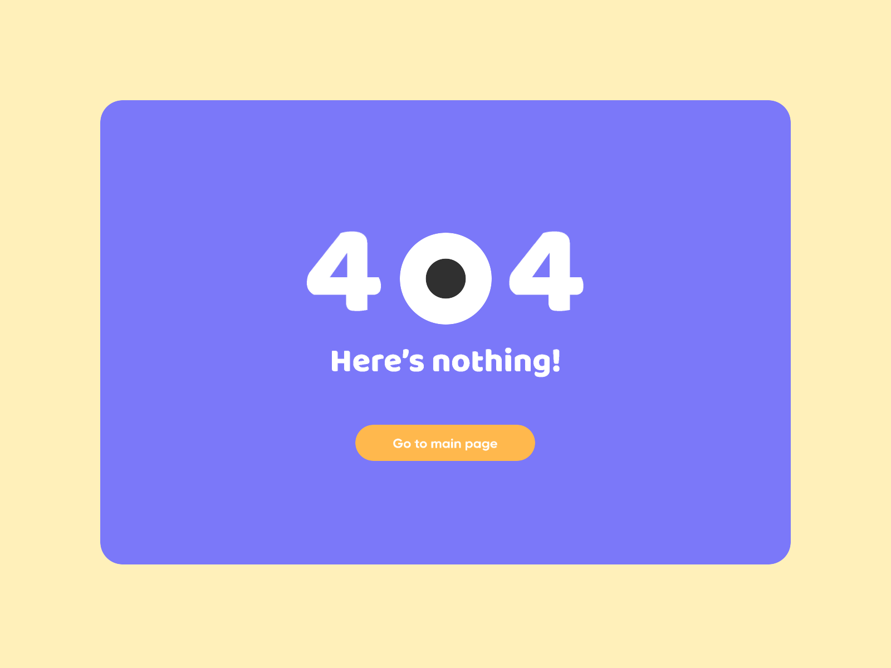

<!-- <div class="wrapper">
    <h2>Oops! Page not found.</h2> -->
   <div class=container>
        
   </div>
    <!-- <h4>We can't fint the page you're looking for.</h4> -->
    <button type="button" (click)="gohome()" class="main-btn">GO BACK HOME</button>
